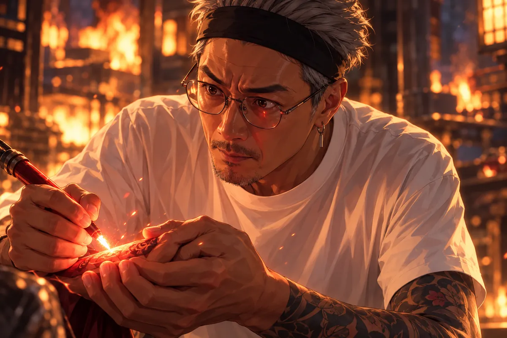

赤坂離開病房前，叮嚀阿副的女友，也要照顧自己的心情。
她送到門邊，問隊長最近是不是也忙。赤坂說還好，她便又道謝，像只要謝得足夠認真，就不會讓這次探望變成別人額外的負擔。
赤坂沒有立即往電梯走。他看她臉上仍沒睡夠，問有沒有找人輪著陪。她說自己可以，答得很快；說完又知道這句和阿副從前的回答太像，聲音便低下來。
他讓她累了就打電話，不用等到真的撐不住。她點頭，手仍搭在門把，像只要關門，便得重新進去照顧每一件事。
戰鬥陀螺的邀約就在這時出來。她愣了，隨後才笑，問阿副會不會嫌幼稚。赤坂說會，所以才更該帶。他也笑，把這次道別留在一件下次能來做的事上。
累了就打電話。下次他帶戰鬥陀螺，找阿副玩。
女友終於笑了一下。醫院的白光裡，這句不太像成年人會說的邀約，讓一切沒有那麼硬。
走出來，赤坂遇見當志工的筱晴。他遞上一罐巧克力牛奶，仍記得她喜歡喝什麼。
筱晴握住冰涼的罐子，愣了片刻。
赤坂往旁邊讓，免得擋到來往的人。她身上的志工背心還沒脫，剛剛手裡拿的東西已經交出去，工作一停，便不太知道自己該往哪裡站。
巧克力牛奶的罐身沾著一點水，她用指腹抹過。以前提過喜歡，她以為只是隨口一句，連自己都不記得什麼時候說的，他卻仍記住。
她問來看誰，他把阿副的狀況簡單說了，不多講那些沒必要讓第三個人知道的細節。筱晴點頭，原本想說辛苦，接著又覺得，這個地方每個人似乎都已經聽過太多辛苦。
於是她把話留回自己，告訴他做志工時比較不容易一直想。可等到忙完，走出大門，夜卻會重新等在那裡。
赤坂聽著，沒有急著替她安排更多工作。
她可以幫人，可以忙一整天。可是夜一來，杜哥不在的事便重新坐到她旁邊。
「有空能陪我聊嗎？」
赤坂說，她不用愧疚。以前她談了戀愛，是他自己退開，想避嫌。
筱晴知道。正因為他懂得退開，她才敢在這時候靠近，把難受說給他聽。
她說有空聊，先說得像問一個很小的忙，後面又補不用每天。赤坂沒有用時間表回應，只說不用愧疚。
那兩個字一到，她才意識到自己確實一直把這個問題藏在後面。杜哥不在，自己卻要找另一個男人說話；哪怕只為熬過晚上，仍像得先向某個看不見的人解釋。
赤坂讓她知道以前退開是他的決定。不是她做錯，不是友誼被誰拿走，而是當時他覺得距離留多一點比較合適。
她抬眼，看著這位沒有趁自己最難過時走得更近的人，終於肯讓肩膀松下。那句沒有別的意圖，緊跟著又被他故意講得很欠揍。
筱晴回嘴，聲音比方才亮。他聽到，才笑著往電梯走，留她拿著牛奶，不必為了剛才的請求再多說一聲抱歉。
赤坂怕她太沉重，故意說，自己沒有別的意圖，真要找女友，也得找年輕一點的，才不要歐巴桑。
「你是在靠腰喔。」
她終於回嘴。赤坂笑著，沒有再急著安慰。牛奶罐在她手裡，慢慢不那麼冰了。
河床潮濕，螢火蟲從草叢裡亮起來。
筱晴走到前面，又停下。赤坂說累了就坐著說。他們在夜裡並肩坐好，兩人中間留著舒服的距離。
她一開始還想把散步真的走成散步，問前面哪裡能到，跟著路燈往較亮的地方走。赤坂卻沒有安排非走完不可的路線，她停，他便也停。
坐下時地面有點涼，她把衣服往膝上攏，先看水，沒有立即開口。白天說得出的事到了夜裡，常要多留幾口呼吸，才不會一開始就哭。
赤坂看向同一個方向，問這裡以前來過沒有。她說來過，又沒有接著講是和誰。他懂得，就不再追問。
草裡的光亮起來時，她先以為是看錯，低頭找，才認出螢火蟲。那一點光沒有替她把難過照掉，卻讓目光終於可以落在眼前，不必一直回到同一段記憶。
她說起昨晚的夢，赤坂便把頭稍微轉過來，聽她慢慢講。
她昨天夢見杜哥。杜哥在地府開紋身店，說文印能帶相愛的人越過輪迴，也能延長生死簿上的壽命。
赤坂第一個問題竟是，好不好賺。
筱晴看他一眼，原本想問這是不是太現實，隨後又忍不住笑了。夢裡的杜哥確實說了很多神奇的事，誰也沒告訴她店要怎麼經營。他若在旁邊，恐怕先嫌赤坂不懂重點，又會認真把收入算給他聽。
想到這種口氣，她笑到一半便停。赤坂看見，沒讓她非笑完不可，只說既然有工作，聽來應該過得還行。
她點頭，低頭撥開鞋邊一根草。夢裡見到杜哥時，她最先也想知道吃得好不好、有人照顧沒有，那些比越過輪迴還遠的事，其實不是第一個念頭。
赤坂問還說什麼，她便接著說，像終於有個人能聽這些既真實又沒人會信的細節。說著說著，肩膀往旁邊偏了一點，又趕快坐正，假裝在找更舒服的位置。
筱晴笑出聲。她不知道，杜哥沒提收入，只講那些很遠的事。說到這裡，她側過頭，忽然覺得夜光裡的赤坂有點帥。
這念頭讓她自己也嚇了一下，趕緊把視線放回草間的小燈。
赤坂問，老杜還說什麼。
她說，自己告訴杜哥，最近好一點了，因為晚上有赤坂陪她講電話。
然後杜哥生氣，消失了。
赤坂笑著嘆氣。「是男生都會生氣吧。」
她先想反駁，自己明明講的是最近比較好，又不是要把杜哥換掉。話到嘴邊，想到那張在夢裡突然收起笑的臉，便沒繼續。
赤坂沒有替誰判對錯。他把手搭在膝上，望向水面，像讓這個問題先和他們一起坐一會兒。
筱晴問，那以後是不是不該再提。他說不知道，隨即補，找個人聊聊沒有錯。她聽著，反而比聽一句肯定的當然沒關係更放心。眼前這個人沒有辦法替死去的戀人批准，也沒有拿自己知道的體貼去要求她馬上接受。
她又看一眼他的側臉，心裡那點意外的悸動便被自己悄悄壓住。今晚還很長，不用急著給它名字。螢火蟲從近處移到遠處，她看著那一點光，終於能夠只說一句這裡真好看。
筱晴望著水。沒有再把那個短促的心動說出口。螢火蟲忽明忽滅，他們只坐著，讓這趟散心，暫時仍然只是散心。
杜先生搶走託夢相機，想親自問清楚。
孤男寡女，天天講電話，誰相信只是朋友？
杜先生把相機抱在胸前，鏡頭朝外，像那是一件只要握住就能立刻得到答案的東西。大寶伸手，他便側身；大寶從另一邊過去，他又往後退。
白妹站在門邊，問需不需要叫人。狐姬搖頭，先看兩人一前一後繞著走，隨後實在忍不住，提醒相機不是這樣用。
杜先生卻只聽見天天講電話。那些話在腦裡已經演成許多場面，筱晴笑的樣子、赤坂答的口氣，越想越清楚，偏偏沒有一件是他親眼看過的。
大寶讓他先還來，有什麼下次好好問。杜先生問下次是什麼時候，想到還要存功德，胸口那股急便又上來。
月老就是在這一片吵裡出現的。他看了相機，再看自家店長，問今天準備把這裡改成搶劫現場嗎。杜先生剛要答，紅線便已經從旁邊收了過來。
大寶追著要相機，解釋拿回去也不能自己託夢。狐姬和白妹在旁邊看，直到紅線一收，月老把自家店長拉走，說要做教育訓練。
一場混亂才散，穿西裝禮帽的老闆便找上門。
他聽說大寶把一百功德拿去救人。等他和白妹從北境回來，大寶一家也去玩，費用不必客氣。
白妹說，村民為阿志蓋了義民廟，他現在有六萬功德。
她說六萬時像在說家裡還有米。大寶卻立刻把船票的數字重算了一遍，算到後來，發現自己不用算都知道，這和十一點實在差得很遠。
老闆讓他別客氣，他仍下意識問這樣好不好。白妹替老闆回答，既然肯花一百救人，就別為了出去玩不好意思。
大寶笑著道謝，望向兩人的裝束。帽子、西裝，還有白妹出門前仔細整理的頭髮，都讓這趟旅行看起來不只是神明說走就走，而是兩個等過很久的人終於真的能一起出門。
他想起他們在雨裡見面，沒多問，只說一路順風。老闆點頭，又叮囑店裡的事。講到這裡，白妹便催不要每次出門都還在顧店，旁邊的人全笑了。
大寶眨了眨眼。原來功德大富翁，就在隔壁上班。
小雨卻沒那麼開心。
她穿著粉紅韓服站在店裡。代理店長可以自選制服，她明明說的是潮流韓風，老闆卻交出一套他認為十分合適的衣服。
大寶很努力地說，老闆死了幾十年，不懂流行，而且這樣也可愛。
小雨把袖子抬給他看。她原本要的是能俐落端盤子、看起來又好看的衣服，如今卻得先學怎麼不把布料碰進水裡。
大寶看見，先往後退了半步，怕自己笑得太明顯。她立刻眯眼，問他到底有沒有在聽。
「有啊，我說真的。」
「你剛剛明明在笑。」
他承認只是有一點，隨即補整體好看。小雨轉身去拿杯子，裙邊跟著動，大寶便伸手替她把旁邊那張椅子挪開。
她看見這個動作，氣還沒有全消，嘴角卻險些跟著動。連罵那句西八，都像得先忍住笑才夠有力。大寶不敢再點評制服，只問今天忙不忙，讓自己可以從旁邊先幫一點別的。
「西八。」
小雨拎起裙襬去工作。大寶忍笑，想著北境，又看她一眼。出門以前，總得先把這一關哄好。
筱晴請員工把手機拿離倉庫。
她沒有一開始就責備，只提醒這裡的東西不能亂來。員工把螢幕往下，嘴上答馬上拿出去，眼睛卻仍往剛才那條訊息看。
筱晴轉身繼續核對眼前的工作。人多、貨也多，每一件都像已經熟悉，所以更容易有人覺得這一次沒關係。她走開後，腳步聲漸遠，螢幕很快又亮。
員工躲到旁邊，拇指一滑，方才說好的事便被放到等等再做。庫房裡有細細的塵，他沒去留意，只低聲抱怨不滑手機，時間怎麼過。
那隻貓出現得突然。他抬眼，先奇怪，接著不耐煩，想趕走。後一聲還沒完整，眼前便白了一下，巨響從身邊炸開，把所有剛才還分得清楚的物件都推向另一處。
對方道歉，轉身卻又在粉料旁滑開螢幕，低聲抱怨不上網還有什麼意義。忽然，一隻貓映入視線。他才來得及罵一聲，光與巨響便吞掉倉庫。
赤坂到現場，看見公司名字，心口先緊了。
清點後，三個人失蹤，其中有筱晴。
赤坂聽見三個，先問位置。對方報，他複誦，確保自己沒有因為其中那個名字就漏掉其餘兩人。
他讓同伴跟進，指出南邊入口，聲音和每次帶隊沒有差別。可是護具扣上時，手指比平常多花了一點力，扣緊，又確認一遍。
有人問裡面庫存，他聽著，眼睛望向煙。答案聽來足夠，心裡的急卻不能拿來當資訊，只好把該問的都問完，再往裡走。
外面的人退開，路暫時留出，火場卻沒有因為他準備好就變得好走。進入的第一步，熱便撲到面前，熟悉的城市聲音被隔在背後。
他叫筱晴，叫其他人的名字，等回聲。沒人答時便繼續找，不讓自己只因沒有聽到她，就先把恐懼當成結果。
他派人跟進，從南邊入內。隔熱衣擋住炙烤，腳下的路卻不斷變得陌生。金屬扭曲，煙從四面湧來，熟悉的名字喊出去，落不到回聲。
直到他找到她。
筱晴受了傷，抬頭看他。赤坂蹲下去，把語氣壓穩。
「別怕。我會保護妳。」
筱晴想抬手，動作只做到一半。赤坂蹲得更近，確認她能聽見，再把能夠抓住的位置讓給她。
她認出他的聲音，眼睛便跟著動。剛才全是熱和響，東西落下，路也不在，她幾乎以為不會再有人從外面進來。如今那副眼鏡就在面前，她急著說什麼，聲音卻被咳嗽打斷。
赤坂讓她先別講，不用解釋為什麼還沒出去。他把人護住，想著來路，想著哪一段能退，所有平常能快速判斷的地方，此刻都得再確認一次。
筱晴的手終於碰到他。她抓得不穩，他便調整，讓她能靠著。那句保護說出來沒有別的意思，只是要她知道，接下來不用自己再找路。
通訊忽然變急。他還沒來得及聽完整，便先感覺到身後又一陣更強的熱。
外頭，廠務接起電話。
一車鋰電池。提前銷帳，帳上已經走了，實貨卻還留在庫房。
廠務握緊電話，臉色一下白了。倉庫裡還有人。
「快逃！倉儲有危險！」
警告衝進通訊。赤坂抱緊筱晴，身後的熱浪又近了一層。他俯低身子，護著筱晴往外走。
狐姬從北境回來，說那裡很放鬆，與心愛的人去，會更好。
杜先生剛完成一組文印，賺了三十功德，卻累得全身都快散架。
彼岸機場的人來來往往，狐姬說北境時，他原本也聽得很認真。三十功德，正好夠一張船票，他盤算什麼時候能再做，什麼時候可以把出門的時間留出來。
大寶笑說原來這麼好賺，他立刻否認，把手攤給對方看。明明圖已經完成，手裡卻還留著那股耗力後的空，連握緊都像得重新找一回位置。
狐姬問休息沒有，他說有，接著又忍不住談北境，像只要先想一件好事，今天的累就比較容易過去。
心痛就在下一句要出來時撞上來。他還以為是方才耗力，伸手按胸，腳卻立即軟了。機場的地面迎上來，大寶扶他，狐姬看一眼，臉上的笑便收掉。
杜先生聽見掛念心痛，腦裡只剩筱晴的名字。他正抱怨，大寶還沒接話，他便突然倒了下去。
掛念心痛。
火場裡，狐姬撐起防護。杜先生看見筱晴，奄奄一息地靠著赤坂。功德正在耗盡，時間沒有容許他再嫉妒一次。
火在防護外扭動，空氣已經熱得連吸氣都需要用力。杜先生看見赤坂把筱晴護在懷裡，第一眼還想衝過去接，第二眼便知道不是現在能計較的事。
他叫她，她沒有像夢裡那樣抬頭。那份重量在赤坂手裡安靜得可怕，他想碰，又怕自己一碰會讓僅有的庇護亂掉。
狐姬提醒快一點，功德撐不了很久。她的語氣不再像平常接待客人，每一個字都挨著眼前能維持的時間。
杜先生低頭看手，今天做完文印時那股空仍在。他清楚師父說過什麼，甚至記得說那句話的口氣。想活下去的念頭沒有少，只是筱晴的呼吸更近。
他看向赤坂，問喜不喜歡。不是想得到誰贏誰輸的答案，而是接下來必須有個人，能替自己繼續把她抱穩。
「你喜歡她嗎？幫我照顧她。」

赤坂還想問，杜先生卻已經伸出手。
「閉嘴，沒時間了。」
杜先生伸手。這一次，他把兩朵相守的花，留給了別人。
第二組文印完成，靈魂開始崩散。
線落到最後，他停了一下。往常這時該檢查，確認圖和客人都好，再讓人起來；這一次，手卻沒有辦法照平常那樣收回。
指尖先變淡，隨後是手背。杜先生看著，竟先覺得奇怪，像眼前的現象還沒追上腦裡早已知道的規則。他把手轉過來，想確認有沒有別的地方能穩住，光卻從那一邊也散了。
筱晴仍靠著赤坂。文印已經留下，他不必再往前做，卻也不能因此把今天算成已經下班。
狐姬望著他，他才問消失的感覺。問出口，忽然覺得自己問得像第一次來這裡的客人，連將去哪裡都想請別人替他說明。
她說聽說是虛亡。杜先生點頭，像收到一個仍不太懂的地址。接著看那朵花，把最後還能遞出去的東西，穩穩交到她手裡。
他問，魂飛魄散是什麼感覺。狐姬說，聽說是虛亡。
這個曾搶相機、氣得不像話的男人，忽然向她道歉。他替赤坂與筱晴綁住了這一世，讓她的等待又長了一些。
一朵鬱金香交到狐姬手中。改天見到筱晴，替他轉交。
光從他的指縫漏走。他望著自己越來越淡的手，聲音輕得快聽不見。
「真不想消失。」
狐姬握住花。火還在燒，她不能放下防護，也不能用空出的手，把那個人留下來。
狐姬質問月老，既然掌管姻緣，為什麼讓老杜落到這種結局。
月老拿著蘋果，難得沒有立刻開玩笑。
狐姬的聲音比平常硬。她見過許多求不得的戀人，也替他們忙過，知道神明不能把每一次難過都消掉。可是老杜就在眼前散了，她的手還握著他交的花，便沒有辦法像別人那樣說生死有命。
月老把咬到一半的蘋果放下。桌面上留下很小一聲，狐姬卻聽得清楚，好像這間屋子也在等一個神明應該給的答案。
她問他為什麼不幫，問能牽緣的人為什麼只能看。每一句都帶著火場裡沒能說出的急，講完卻沒有變輕。
月老沒有先責備她這樣問，也沒拿自己是師父壓過去。他讓她坐，她不肯，便只將解釋說慢一點，告訴她自己做得到的，到哪裡就不再夠。
命運主軸是古神定的。他是唐朝才出現的神，花了一千年，才做出可以稍微改變命運的文印，仍不足以與更早的力量抗衡。
狐姬站著，沒有因為這番解釋就好受。
千年，對她原本已經很長。現在聽來，卻只夠讓一位神明學出一點能挪動命運的辦法。狐姬看著那張年輕的臉，想起他也有一段不肯講完的過去，胸口那股責怪終於停了一點。
停住並不表示接受。她仍覺得痛，仍想到老杜最後說不想消失時的眼神。若規則真的這麼牢，知道名字也不能讓她少恨它一些。
月老等她安靜，才提供品。狐姬起初沒聽進去，以為又是要她幫忙送到哪裡；粉紅信封從桌邊拿出來，她的目光才跟著移。
她確認一次是給自己，不是要轉交。神明點頭，把東西放到她面前，沒有再用別的話哄她開啟。那種留給自己的等待，她忽然有些承受不住。
月老拿出粉紅信封，說有她的供品。
她怔住。陽間竟還有人記得她？
信是赤坂寫的。頭纏繃帶的男人，寫給神秘的小狐狸。他看見她擋火，想知道為什麼她總在自己無助時出現。聽說心裡想著對方，把東西燒掉，就能送達，所以他試了。
謝謝。
如果還能在夢裡相遇，他希望親口再說一次。
紙上的字有幾處寫得很緊，像赤坂寫到那一句，仍不知道對方會不會真的收。狐姬認得署名，指尖在旁邊停下，卻不敢反覆擦，怕把好不容易來到這裡的字碰壞。
他沒有提三世，沒說前生記憶，更沒有因此許下她等很久的承諾。信裡只有他如今知道的事：火場裡出現的小狐狸，總在自己難受時來夢裡的人。
狐姬把開頭再讀一次。原來這個名字可以留在醒著的他心裡，而不只是睡著後一個解釋不了的夢。
她吸氣，想把笑和眼淚分別整理好，結果先出來的仍是哭。月老沒有笑她，只把桌上的東西挪開一點，讓信不必挨著那隻蘋果。
狐姬捧著紙，站了好一會兒，才終於願意坐下。
狐姬讀得很慢。薄薄的紙，在掌心裡像忽然有了體溫。
「你終於記得我了。」
狐姬把信再讀了一遍。讀到最後的署名，她用手背擦掉眼淚，把紙小心摺回信封裡。
狐姬把鬱金香放好，再讀一次赤坂的信。
花是老杜交來的，信卻是赤坂寄給自己的。她讀了幾行，又抬頭看那朵花。收信的喜悅才剛湧上來，想到老杜，眼淚便又掉了。
杜先生希望筱晴幸福。她也希望赤坂幸福。可是希望別人好，沒有讓等待突然不痛。
她把信封邊角撫平，想到火場裡老杜問，魂飛魄散是什麼感覺。她當時只能說「聽說是虛亡」，卻連那究竟是什麼都不明白。
月老在門外問要不要吃點東西。她說等一下，又過了好一會兒，才走出去。
師父沒有追問，也沒有拿她終於被記住的事打趣。
她坐下，吃完一小份甜點，才說自己還想去託夢。
月老點頭。
她把花和信分開收好，去看明天的排班。多上一個班，就能多存一點功德，下次再去看看他。
黑糖拉著咪咪，連走近都不敢。
他從沒聞過那麼重的怨。它跟悲傷不同，像只要靠近，就會把人一併拖進去。
黑糖不是不知道新來的靈魂會難過。杜先生也很難過，門一直不開，他仍願意再去；眼前這一個卻不同，連站遠一點都像被什麼扯住，鼻子發酸，胸口也跟著緊。
咪咪想先看看，他便拉她，叫不要再過去。說出口才覺得自己不像在做工作，只像要帶她逃。
她沒有立刻掙開。順著他望的方向看，市役所前的人已經避開一條路，中間的少女走得很快，連有人提醒到哪裡辦都不聽。
黑糖想叫名字，卻還不知道。能提醒的只有那股味道，他便跟咪咪說，真的很重，不是故意誇張。
咪咪看了他一眼，點頭。兩隻留在稍遠處，等著裡面的動靜，誰也沒再拿這一件當成普通的一單。
市役所裡，綠髮少女拍向櫃臺。
「我要黑令旗。」
少女把話說得清楚，像在路上已經練過很多次。小米開始問資料，她便推過去；確認條件，她就問到底還少什麼。每一個步驟在她聽來都不像說明，只像又有人要她等。
她不想等了。陽間等警察，等法院，等大人告訴她還可以做什麼，結果人家回去，自己卻到了這個陌生地方，連再叫一聲爸爸都得先問有沒有辦法。
櫃檯後的小米說情形還不符合，她的手便壓緊桌面。胎記旁的臉熱得厲害，少女卻已顧不上四周怎麼盯。
「那我的爸爸呢？」
這句忽然出來，小米停了一下。少女看見那個停，眼睛更紅，像終於把真正沒能拿來申請的理由放在櫃檯上，卻仍等不到她想要的東西。
小米說條件還不符合。少女的呼吸越來越急：霸凌她的人因為未成年，被判得那麼輕，她卻再也見不到爸爸。
女孩叫林語彤。她盯著櫃臺，沒有理會周圍的人。
紫色的魔氣從身上竄出。神差警覺，月老讓小米退開，紅線立刻纏上她。
地府不容許魔。
老闆趕來，請兩位神明稍等。
他望著掙扎的女孩，目光停了一瞬。那些怒氣裡，他認出自己曾走過的路。
「我用羅漢之名擔保，會引導她控制仇恨。」
月老望著老闆，先看他說話的神情，再看那股仍沒有平下的魔氣。這裡不是答應招待一個難過的客人而已，出了事，擔保也得跟著算。
老闆站在少女看得見的位置，沒有急著讓她信任自己。她的目光很亂，在紅線、神差和櫃檯之間來回，最後落到他的官袍上，像只要也屬於神，就該一起被拒絕。
他沒有因此退開，只把聲音放低，告訴她可以先跟自己走。
少女問去哪裡，句子仍硬，卻終於不只剩黑令旗。老闆說燒肉店，她皺了一下眉，像這個回答太平常，跟自己要解決的事毫不相干。
月老提醒晚節不保，老闆聽完，仍沒有改口。少女第一次發現，眼前有人聽清她有多恨，竟還願意把話接下去，而不是先叫她安靜。
月老提醒，已位列仙班，別晚節不保。
老闆沒有改口。他只是走近，讓語彤看清自己，說跟他回燒肉店。
那裡有椅子，有桌子，有人會先問她想吃什麼。在回答該不該原諒以前，她至少可以坐下來。